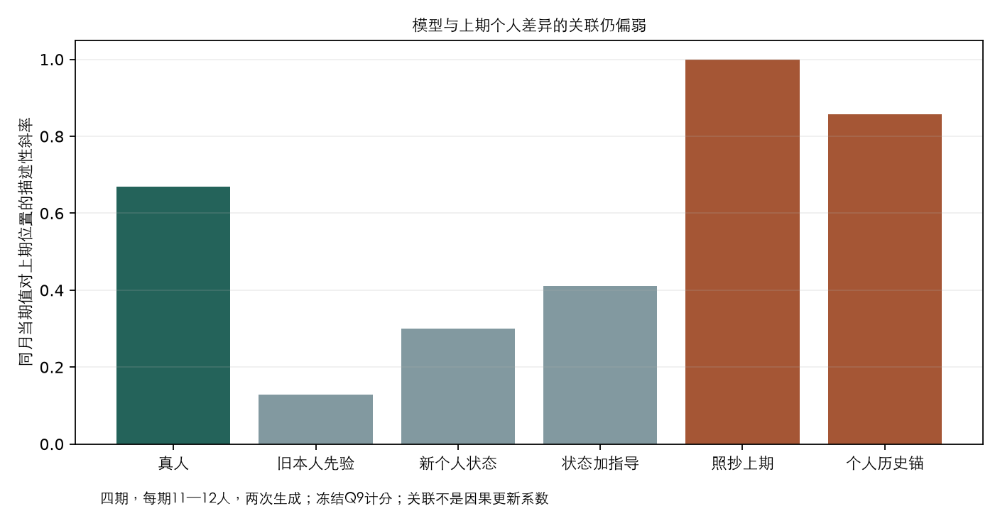
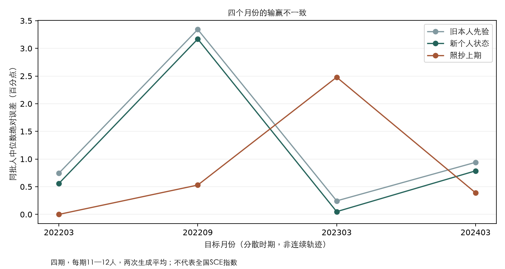
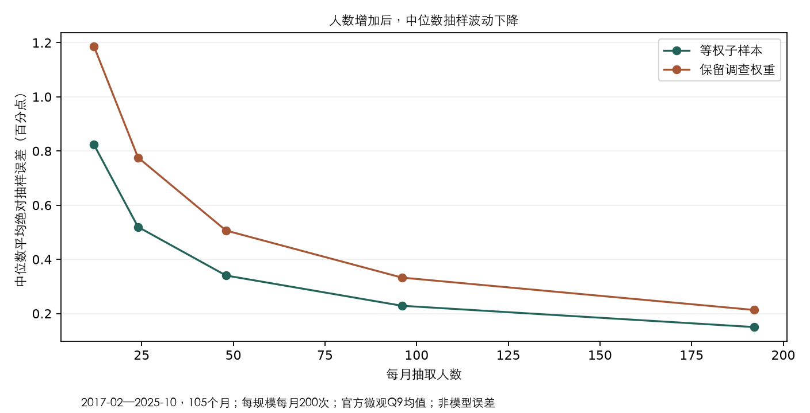

购买频率是否抽得不合适？家庭匹配是否太粗？
2026-10-15，离线核查完成，没有新增API费用。结论是：原种子不显得异常，多季度能改善匹配；但“同收入档”还不是“相同资产和生活处境”。 本轮没有修改旧输入，也没有新的拟合成绩。
一、四季度就在本地，之前只用了Q4
按官方字典处理2020年Q1—Q4，同口径可用家庭分别1,595／931／1,222／1,348。Q4原有1,348户、2,426周与全部向量完整复现。家庭先抽、再抽该家庭一周，没有把两周当两个人。
在固定收入和年龄、标准化到同一192个画像后，在家食品日数约2.21／1.60／1.83／1.99，外食2.45／1.30／1.81／1.79。单季度不宜默认跨年稳定；2020疫情、季节、参与和采集变化尚无法分开。

二、原来是否只是随机抽得不好？
相同Q4供体、同一192个画像，重抽200个种子。原四类平均频率全部落在中央95%的重抽范围内。因此暂时没有证据认为此前主要是一次抽样运气差；这只检查四个平均数，并不证明个体匹配或联合结构正确。

三、收入、住房、地区、教育实际保留了多少？
| 匹配条件 | 目标中已知 | Q4明确保留 | 全年池明确保留 |
|---|---|---|---|
| 收入档 | 192 | 192 | 192 |
| 年龄组 | 192 | 192 | 192 |
| 住房身份 | 179 | 174 | 176 |
| 地区 | 192 | 99 | 187 |
| 教育 | 191 | 28 | 123 |
原供体池不足时先放宽教育和地区，因此它们虽在设计中，却经常没有成为实际约束。全年池明显改善支持；原分配所有保留字段均执行正确，没有发现程序把已要求匹配的字段配错。
四、同收入档，为什么还不够？
当前仅用三档收入，覆盖范围很宽；消费单元与家庭的边界也不同。CE五套收入插补值约有13%—15%的完整家庭周跨越收入档，提示分档还存在测量不确定性，不是现实收入在两周内突变。
住房身份只是拥有/租住，不是资产。 房屋价值、贷款余额、流动资产、净财富均未参与当前匹配。收入高低也不能代替财富，尤其对退休家庭。
进一步核查发现：SCE问卷Q47本来就有11档过去12个月税前收入，Q45有家庭成员构成，Q44问是否另有住宅，Q46问家庭财务决策分工。原始文件中确有这些字段，但尚需按首次作答时间和有效值核查再接入；Q44不是净财富，Q46也不等于实际买菜责任。
已对2020—2024原始82,535行清点：Q47有8,481条有效收入码，Q45家庭构成字段各8,538条非空值。这些题仅在首次参与时问，尚需按个人追溯，不可当作当期人口缺失率。另发现原CE程序把恰好10万美元划入中档，SCE Q47却从10万美元起算高档；Q4原始资料涉及8个周，下一候选应修正，旧输入不改。这一小边界问题不能解释全部拟合失败。
五、还有一项筛选影响
原供体排除了四类均无正支出但记录支持完整的周。全年池纳入这些周后，在家食品期望日数约1.95→1.85，零记录比例约10.0%→15.6%。说明筛选会抬高接触水平，但未证明它造成了预期中心误差。无明细和未知日码继续按缺失处理，不能填0。
下一步
- 核查细收入、家庭规模等SCE实测字段的覆盖和记录时点，优先改善共同字段的联合匹配。
- 补非疫情和目标年份CE，检查跨年稳定性和当时是否公开；不能把2020四季当作每年重复的真实习惯。
- 匹配改进与信念更新分开验证。多季度目前改善的是输入可信度，不保证自动解决模型的系统性偏差。
完整结果、来源与复算 · 聚合备份 · 此前控制变量分析 · 当前任务清单
控制其他变量后，购买频率与误差有什么关系？
还没有找到稳定的“频率提高、误差下降”关系。更明显的线索是：个人价格输入仍比较相似，模型对个人历史信念的差异保留不足。 这是对实现方式的诊断，不是购买频率理论被否定，也没有确定唯一原因。
2026-10-15，新增API调用0、费用0。分析四个已看过的开发月：2020-04、2021-05/11、2022-03。每期原选48人；Q9共同支持188个不同人月，每人两次生成先平均，完整控制回归173人。
怎样做到“控制其他变量”？
控制月份、本人上期Q8/Q9及过去均值、次数和概率区间，年龄、教育、收入、地区、住房、就业、数理能力、合成支出及信心。四类频率同时进入；再比较同一个人的说明组减数据组，两组其他输入完全相同。完整模型35个参数，使用稳健区间，并做简化控制与逐月剔除检查。
两组都有频率，没有同期无频率组。 原说明段还包含持续性和先验提醒，不能拆出纯频率强调的因果贡献；更早C组跨批次又少了新价格，控制变量也不能修补这个对照缺口。
一、所谓个人价格体验，87.5%的差异来自月份
离线用四类记录日数加权类别同比，得到透明的价格接触代理。其87.5%的差异在月份之间，只有12.5%在同月不同人之间。97.9%的人至少一种食品类并列最高频，而大家仍看到相同的全国食品大类价格。

二、频率与个人误差的关系不稳定，历史差异压缩仍明显
控制后，四类频率与两组Q8/Q9个人误差都没有稳定联系。12项主要联合检验经多重比较校正均未通过。食品频率与说明组预测下调有一条探索关联，但去掉2021-11就减弱、区间跨0，不能单独拿出来当结论。
个人历史通过多个相关字段进入，不能把一个系数叫“先验权重”。补充检查把上期Q8、Q9及历史均值同时提高1个百分点：真人回答的条件关联约0.61，数据组0.31，再加说明组0.24。模型保留个人差异较弱的方向，在简化控制和逐月剔除后仍在。

三、Q8群体中心稍改善，不等于每个人更准
更早C→频率数据组，群体Q8中位数MAE为0.85→0.75；同一188人的逐人Q8绝对误差约5.08→5.07，基本没变。Q9群体中心误差为0.58→0.76，逐人误差3.15→3.16。两种聚合方法和两种问法必须分开。

四、为什么点回答接近了，Q9却没有跟上？
点回答Q8和十档概率拟合的Q9均值没有必须一致的约束。逐月逐遍精确拆分可见：旧C→数据组，Q8有符号偏差改善0.075个百分点，但模型与真人“Q9中心减Q8中心”的差又下降约0.125，抵消了前面的改善。
因此既要检查信念怎么更新，也要检查信念怎么表达成十档概率。这个分解不是因果归因；绝对误差不能按这个等式直接相加，也没有证据说明是计分器出了故障。
怎样理解文献与此次失败？下一步做什么？
原研究匹配实际家庭购买和具体商品价格。我们现在是另一批家庭的单周分类记录、全国大类价格和文字说明；尚未验证个人购物角色与具体价格感知。现实中有用的解释变量，也不保证加入LLM后必然提高拟合。
- 保留当前数据和负结果，先审查更细的商品、购物责任和价格体验能否匹配。
- 把保留原有信念与依据新信息更新分开设计；频率注意力、持续性要求不再捆绑。
- 独立查Q8与Q9表达差异，不靠随机噪声把回答拉散。本轮没有新的付费模拟。
以上是四期、合成供体、两次生成下的探索结果；173人不能代表173个独立月份，区间不包含全部供体和模型不确定性。来源哈希、3项数学检查和独立OLS/HC3计算已核验，15份待审文件原样。
完整方法、数字、局限与复算 · 无个人行的聚合备份 · 原实验结果 · 当前清单
频率数据相同，明确作用说明没有更好
2026-10-15完成。此次检验的是“这段说明有没有增量”，不是购买频率数据是否有价值。 两组都拿到相同的四类购买日数和价格，并保留原有信念、时间索引、新闻与政策。只有说明组明确要求高频类别获得更多关注，再判断变化会否持续。你要求删除的“不要机械外推”没有加回。
主要结果：中位数、分布、个人更新一起看
| 同样本Q9指标 | 频率数据组 | 数据＋作用说明组 | 怎样理解 |
|---|---|---|---|
| 群体中位数MAE | 0.763 | 0.808 | 点值略差，统计区间仍含0 |
| 跨人分布W1 | 2.232 | 2.413 | 差值+0.181，区间[+0.046,+0.264] |
| 个人更新分布W1 | 1.629 | 1.622 | 几乎持平，区间含0 |
| 人际差异宽度IQR | 2.226 | 1.961 | 真人4.773，说明组进一步收窄 |
| Q8点预期中位数MAE（另列） | 0.750 | 0.800 | 与Q9分开，不混算 |
单位均为百分点。四个已看过的开发月各48人、每组生成两遍；188个不同人月、376条共同有效生成。4个真人Q9不能评分，未另补人。每月每遍先算、再平均；Q9是个人密度均值的跨人中位数，不是全国官方指标。

为什么暂不采用这段话？
四个月的跨人分布误差都变大。同月按人配对重抽、保留一个人的两次生成后，误差增加的95%区间为[+0.046,+0.264]，在所选月份和生成条件下较稳定。中位数误差变化区间[−0.178,+0.186]、更新误差区间[−0.106,+0.131]，两项没有明确增量。
按原登记，候选未通过。使用原调查权重作辅助，中心误差有所改善，但分布和更新误差同时变大；不事后换口径挑胜负。区间是这些开发月的样本人不确定性，尚不代表其他时期或未来模型随机性。
先澄清：没有证明“购买频率本身有害”
本轮两组都已有频率；检验的是再加入整段作用说明。该段同时强调频率、判断持续性并提醒先验仍可重要，因此不能进一步把结果全归给频率强调。当前更该审查实现方式。
192人月有98种四类频率向量，但97.9%至少有一种食品类并列最高频。这个分布本身未必错；问题在于每人面对的是同一套全国食品大类价格。常买肉与常买蔬菜者的真实体验差异尚未进入，家庭记录也不是本人购物责任。原研究匹配的是具体购买篮子、商品价格与本人预期，粒度更细。原研究
“强化共同信号”是目前可检验的解释，尚未确定为原因。下一步先审查频率到个人价格体验的对应，再做只改变一个行为要求的设计；不因本轮结果放弃购买频率方向。
同质化为什么更严重？现在有什么线索？
原有个人位置的描述斜率0.241→0.182，排序相关0.463→0.438。这与模型更看重大家共有的类别价格、较少保留自己的原有高低位置相容，还不是已证明的心理路径。解释文字不能当作因果证据。

频率来自另一批CE家庭的单周记录；粗画像匹配不保证复原购物角色、长期习惯与原有信念之间的关系。四类只覆盖一部分消费，也可能使共同价格更加突出。这些是下一步可检查的缺口，不是此次已确定的原因。
概率回答还是什么状态？
通缩五档全填0：数据组12.7%、说明组10.1%，真人66.9%，填法差距仍在。但单个人的密度平均IQR是3.935/3.988，真人4.548，因此当前不能泛称“模型单人概率比真人更散”。需要区分不同人预期的差异与一个人回答中的不确定性。
结论与后续
这段明确说明暂不加入主机制；频率材料、价格对应和以前的先验/时间索引候选全部保留。下一步先用已有数据检查合成频率的差异和模型如何保留先验，补购物角色依据，再决定改匹配、信息呈现还是信念更新。当前没有新的运行任务，不自动追加付费调用。
旧C按本轮376条支持重算为中心0.579、IQR2.322，原报告374条支持的0.588/2.262保持不动；是共同评价集合变化，不是改旧回答。新数据组Q8为0.750、旧C为0.850，仅作描述参照，不据此宣布数据有效。
768实际输入/回包/参数哈希与费用已核对，三主指标用独立SciPy复算最大差8.89×10⁻¹⁶；15份待审文件原样。记录费用$0.875302低于$4上限，未包含供应商缓存/错峰折扣，不是账单。
完整设计、结果、边界与复算 · 聚合结果 · 本轮实际输入样例 · 任务清单
此前进展与频率准备快照
本节为运行前记录；真实实验已完成，最新结论见本页顶部。以下准备不代表频率机制已有效。
单个改动不必解决全部同质化。我们认可已经取得的小步改善，再把购买频率作为独立的下一项检验。
同一批人，怎样一步步变化？
| 已有阶段 | 总体中位数误差 | 跨人分布距离 | 个人更新分布距离 | 人际差异宽度 |
|---|---|---|---|---|
| 没有本人过去问卷 | 1.399 | 3.265 | 2.161 | 0.809 |
| 有本人过去问卷，原提示 | 0.737 | 2.415 | 1.573 | 1.801 |
| 更明确的本人信念起点 | 0.705 | 2.337 | 1.620 | 2.086 |
| 增加信息发布时间索引 | 0.588 | 2.253 | 1.578 | 2.262 |
同一188个不同人月、374条共同有效生成，四个开发月，每月每遍先计算再平均。单位百分点；前三项越小越好，宽度应接近同批真人的4.773，并非越宽越好。全是Q9：个人十档拟合密度均值，再比较跨人中位数和分布；Q8另列。
这是改善过程的描述，阶段跨批次、输入逐步增加，不能各自解释成因果效果。最新时间索引对同期对照的三项误差点值都小一些，但区间均含0，原筛选仍未通过。“未通过整体升级”与“没有进步”是两回事。 今后的收益也未必自动相加。
购买频率现在准备到哪一步？
- 真实参考：本地CE Diary 2020Q4，1,348个供体家庭、2,426个可用周。消费记录换成各类七天内有正支出的日期数，一天多次只计一天。
- 匹配人口：收入、年龄优先，其次住房、地区、教育；小池放宽条件。192人月均保留年龄和收入匹配，最小池25个家庭。整条四类频率来自同一个供体周，保留类别之间的关系。
- 对应价格：在家食品、外食、清洁/纸制/家务用品、个人护理用品，分别接到同期可见的BLS类别价格。过去一年同比与过去一个月环比分开写，不把过去涨幅说成未来一年预测。
- 两组输入：都保留时间索引候选、先验与其他P/E，频率和新增价格也完全相同。仅一组明确说“高频购买类别对你的判断有更多影响”。
理发等服务在这份Diary里只有不纳入发布的记录，不能冒充零购买频率，已移除。资料是疫情时期一周记录和回顾性代理，不是SCE本人的购物轨迹，也不是2020年4月实时可得数据。
给模型的新增部分，是什么样？
下例频率数值仅为演示；价格是2021年11月可见的2021年10月官方数据。真实消息沿用完整原P/E，不只发送下列几行。
你的合成家庭购物接触： 在家食品：一周3天；外食：一周2天； 清洁/纸制/家务用品：一周1天；个人护理用品：一周0天。 这里是有记录的日期数，不是购物次数；0天不表示永远不购买。 可见价格（2021-10，2021-11-10发布）： 在家食品：同比+5.4%，环比+1.1%；外食：同比+5.3%，环比+0.8%； 家务用品：同比+1.7%，环比+0.7%；个人护理用品：同比+0.2%，环比+0.2%。 只有“作用说明组”增加： 判断物价变化时，更关注你购买频率高的类别，并让其产生更多影响。 再判断这些变化会不会持续到未来12个月；原有信念和其他信息仍然可以重要。 （按用户要求，不加入限制价格外推的句子。）
查看本地完整真实输入预览（英文，未外发）。长数据局限放在审计记录；模型收到的是简短、可使用的合成特征。
接下来具体做什么？
- 把两组接到独立运行入口，完成离线引擎检查。
- 调用前登记评价与费用：总体中心、跨人分布、个人更新都看，不能仅因回答变散就算成功。
- 明确新调用范围和预算，再运行真实API；有增量后再检验匹配与随机置换，以及其他时期。
性别仍保留为后续方向；已有性别差异不能直接当成购物责任。当前0新API调用，384份仅是材料预览，没有新的模拟结果、预算或运行配置。该材料准备快照为16/22；最新已完成运行接线，清单把真实执行和评价细化为两项，见页面顶部。
完整方法、局限、复算与路径 · 聚合记录 · 任务清单
新措辞与信息时间：有改善趋势
仅进一步改措辞，没有明确改善；配合发布时间标记，三项误差点值都下降。但尚未通过预登记筛选，个人差异依然被压缩。
2026-10-14完成。旧A组384回答完整复用，不重复收费；新增B/C各384，共768请求，约$0.700记录token高峰估算，非账单，低于批准$3上限。DeepSeek官方deepseek-flash、温度0.5、关闭思考，无连接错误或重试。
三组是什么？
- A，复用旧明确先验：自己的上期信念作为当前起点，允许保持或调整。
- B，新时间措辞：强调“上个月依据彼时信息形成的信念”，E呈现不变。
- C，与B同措辞＋时间索引：同样事实和新闻，标出上次回答前已公开、后来公开、同日顺序不确定。
四期2020-04／2021-05／2021-11／2022-03，各48人、各两遍，人物与过去回答不改。C−B是本批同期主要对照；B−A仅探索，有批次差。时间标签来自上月作答日，但不发送实际日期；公开过不代表真人看过。
同样本Q9表现
| 方法 | 中心MAE | 跨人W1 | 更新W1 | 人际IQR |
|---|---|---|---|---|
| A：旧明确先验（复用） | 0.705 | 2.337 | 1.620 | 2.086 |
| B：新时间措辞 | 0.721 | 2.419 | 1.664 | 2.159 |
| C：新措辞＋时间索引 | 0.588 | 2.253 | 1.578 | 2.262 |
| 照抄上期 | 0.696 | 1.152 | 3.055 | 4.448 |
| 过去个人均值锚 | 0.811 | 1.259 | 2.172 | 3.976 |
误差单位是百分点，越小越好。真人IQR为4.773，模型差异仍不足；IQR要接近真人，不能仅追求变大。Q9是个人密度均值的跨人中位数，Q8单列。新B/C出现无效回答，因此共同支持与上一轮略有不同，复用A的重算值有微小变化，旧回答没有改。

为什么仍不说已经成功？
C相对B，中心误差下降0.133pp（约18%），跨人W1下降0.166pp（约7%），更新W1下降0.085pp（约5%）。成对重抽同月受访者并保留每人的两遍生成，95%区间分别为[−0.264,+0.143]、[−0.344,+0.012]、[−0.275,+0.085]。三个区间均含0，不能排除换一批人时改善不明显。
按预登记标准，综合筛选未通过。 主W1区间上界虽然接近0，仍大于0，不能四舍五入为通过。四期中心平均方向均改善，但W1在2022-03略差；单个月份或另一种抽样区间不替代主要标准。
2021年11月如何？
中心误差A 0.627 → B 0.348 → C 0.320，照抄上期1.260。这个月份改善明显，但新措辞在其他月份有代价，且B与A不同批次，不能据此证明新措辞普遍有效。C相对B的中心收益更多出现在2022-03，不能只看11月。

尚未解决什么？
人际IQR只有2.262，真人4.773；C的人际排序也没有优于B。通缩五档全填0比例仍约9.5%，真人66.7%。发布时间标记并没有恢复居民完整的价格接触、生活经历或概率填法。
这是A路线回访者条件诊断，四期已被查看，不是独立测试或B实时预测。当前仍使用统一study截止点，未逐人匹配本期真实作答时刻。192入选人月中4个真人Q9不能计分，未补抽；新B有2份99%概率合计、C全384有效，失败原样保存。共同评价188不同人月、374配对生成，186人月两遍均可比较。
下一步
保留可追溯时间索引和改善趋势，不覆盖主配置、不再反复修改原四期措辞。推进CE购买日数的共同画像匹配、整条频率供体与食品／家务用品／个人护理价格对应。候选合并或独立验证另登记时期和预算。
完整结果与统计解释 · 无个人记录的聚合结果 · 当前清单
本人信念起点：有局部改善
不增加数据，只把上期回答更明确地说成“你自己的信念，是当前判断的起点”。分布更接近真人，但还没有解决总体拟合与同质化。
2026-10-14完成。2020年4月、2021年5月/11月、2022年3月各48人，原提示／明确起点两组各生成两次，共768次请求。DeepSeek官方deepseek-flash，温度0.5、关闭思考、不重试；记录token估约$0.58，低于批准的$3上限，不是厂商账单。
只改了这一段意思
上次问卷记录的是你自己的信念，作为当前判断的起点。依据新信息决定保留或调整；回答不变是允许的。预测窗口向前移一个月，没有规定必须调整多少。
同一批人、同样的价格／新闻／政策、同样的真实个人上期Q8／Q9和更早均值摘要。未规定照抄比例，未改变模型、新闻或购买频率。依据：全跨度数据中本人上期信念很有信息，而已有模拟明显压缩了原有个人位置。
改善在哪里？代价在哪里？
| 同样本Q9评价 | 原提示 | 明确起点 | 含义 |
|---|---|---|---|
| 总体中位数MAE | 0.687 | 0.704 | 基本没变，不能称改善 |
| 跨人分布W1 | 2.617 | 2.329 | 降低约11%，四个月平均均改善 |
| 个人更新分布W1 | 1.628 | 1.625 | 基本持平 |
| 跨人IQR（差异宽度） | 1.790 | 2.087 | 同批真人4.773，仍明显压缩 |
单位为百分点。前三项越小越好，IQR要接近同批真人，不能只追求变大。每月每次生成先分别算，再等权平均。Q9中心是个人密度均值的跨人中位数，不与Q8混合；Q8中心MAE为0.863→0.900。

统计区间怎么理解？
同月成对重抽受访者，保留每人的两次生成。分布误差变化为−0.288pp，95%区间[−0.394, −0.147]，不含0：在这批人和这些月份里，改善较稳定。总体中心变化的区间[−0.228, 0.212]与更新变化区间[−0.175, 0.126]含0，暂不能判定明确改善或恶化。
综合筛选未通过。 事先要求分布改善且中心、更新的误差点值均不增加；中心点值增加0.017pp，所以按原约定不升级主机制。这个判定不等于认定提示无效：局部增量值得保留，下一步仍要保护总体准确度。

还缺什么？
人际差异仍不到真人的一半；通缩五档全填0比例为6.6%→9.5%，真人66.8%，概率表达差距仍在。不能仅靠这一段提示恢复所有人的生活经历、价格接触和问卷习惯。
本次是A路线回访者条件重建，使用真实过去问卷；192个入选人月中4个真人Q9不能评分，未补抽。模型767份有效、1份合计99%，原样保留；共同评价188个不同人月、375条配对生成。四个月以前已经被查看，不能称全国结果、独立测试或B路线实时预测。
下一步怎么做？
保留明确起点候选和全部结果，不覆盖原提示、不再改几句重复跑这四个月。先完成CE购买日数的条件供体匹配，食品／家务用品／个人护理的价格对应；当时计划以原提示为基准；最新离线准备已改以C时间索引候选作两组共同探索基础，见本页顶部，正式配置不变。有希望的机制之后另留时期验证。
实验前依据：数据检查和离线准备
以下是实验前完成的离线检查，当时新增API调用0。人口特征的作用需要分开看：有些对应预期高低，有些主要对应不确定性；本人过去信念有更强的信息。
SCE控制变量检查
2017年1月—2025年10月，106个月、130,216条受访者月记录。控制月份、年龄、教育、收入、数理能力、地区、就业和性别。图中是平均差异与按人聚类的95%区间，不是全国中位数，也不是因果贡献。
- 女性Q8点预期平均高2.115pp，Q9个人密度均值高0.431pp，两者不能混用。
- 低数理能力Q9均值差−0.031pp、区间跨0；个人密度IQR却宽2.275pp。它更适合先从不确定性机制理解。
- 同样的96,683条相邻回访记录，人口变量对同月差异的解释比例约1.25%，加入本人上期信念后约32.77%。这是描述性解释，不是预测成绩。

模型仍压缩原有个人位置
复用八期756个完整人月，按同人的可用生成取平均。上期较高者本期仍较高的关系，在模型中比真人弱；年龄、收入、数理能力组都看到这个现象。斜率是统计关系，不等于应注入的更新比例。

实际准备了什么？
- CE Diary分类购买日数：2,835个家庭周、1,440个家庭，保留缺失、来源和周权重；各类日集合并集全部复现旧总日数。尚待条件匹配及价格类别对齐。
- 本人信念提示：明确“这是你当前判断的起点，回答不变是允许的”，其余P/E、上期回答与问卷保持。实验前已生成完整离线对照预览；真实测试结果见上方“本人信念起点”。
- 频率提示：明确“高频购买类别的价格变化有更大影响”。后续先比较同一频率数据有无该说明，再比较人口匹配与置换。
Events与记忆怎样结合？
事件触发与个人经历相关的联想，再影响信念调整。年龄机制继续保留；旧历史叙述失败不证明记忆没有作用。理解风格先做同人随机交叉；构造代表性人口时需要外部调查的条件分布，不能把随机比例称为真实美国比例。
性别差异通过购物分工传导有研究支持，但SCE没有直接购物频率；本轮只检验性别关联，尚未识别购物的中介作用。
外部观点：有价值，怎样落实？
提示词可以用来表达居民的思考习惯。下一步重点是让信息经过个人理解，再形成回答；每种习惯的依据、分配方式和实际效果都要检查。
2026-10-14：本节是文献核对与方案草案，新增API调用0，原实验结果及配置未改。
最值得留下的三点
- 价格接触不同。经常买什么，会影响什么价格最容易被想起来；购买频率与支出占比需要分别处理。
- 原有信念不同。新信息不必把过去判断全部推翻。八期结果仍显示个人差异被压缩，先查压缩发生在哪里。
- 理解方式不同。同样看到加息，有人先想到企业成本，有人先想到需求降温。美国居民调查及随机提示研究支持这个方向。
不能直接照搬的结论
不能把因素排名、年龄U型、女性固定高2个百分点、低收入固定高3个百分点写成人群规则。年龄关系会随时期变化；食品支出占比高也不等于反应更强。所引英国食品论文为2025年，短期与长期预期也并非互不相干。
具体怎么往下做
- 先零API拆解已有回答：核查个人上期位置、公共月份变化、个人更新；按年龄、收入、数理能力看差异压缩。
- 补购买频率代理：现有CE Diary已经有合计购物日数，下一步补到商品类别，检查共同画像字段能否支持匹配。
- 选择一个机制小试：购买接触比较当前输入／条件匹配／随机置换；政策理解可另做同人的成本／需求提示对照。先不一次加入所有机制。
提示可以怎样写？
你通常先通过经常购买的商品形成物价印象，再判断这些变化是否会延续到未来12个月。其他消息仍可能改变你的判断。
这是待检验的机制提示。购物接触需要数据支持；缺乏人口对应依据的理解风格，先作为随机交叉的实验条件。人口匹配不能仅靠“年龄大，所以更悲观”。
怎样算有进展？
不仅看回答变得不同，还要看总体中心误差、跨人分布W1、更新分布W1；条件匹配要优于随机置换。已有八期已被查看，只能供进一步开发诊断，改进后另留验证期。新模拟的范围与费用会另登记。
一手依据：美国购物频率研究 · 主观经济理解与随机提示 · 英国食品研究。完整来源索引见复核文档。
八期扩大实验：已完成
按预先登记的三项相对误差综合标准，开发期选择的新信息权重为0.00。这次程序方案因此退回上期延续，并没有证明加入LLM新信号更好。它不是说居民从不更新；真人在更新，但本次LLM信号和组合方式没有同时保护好总体中心、人际差异和更新分布。
八期各96人、两组、各两次，3072真实请求；模拟约$2.14，新闻约$0.58，合计约$2.72（token估算，非账单）。无重试，全部实际提示与预览一致。
固定规则后的四期评价
2022-06、2023-06、2024-10、2025-09。误差单位均为百分点，越小越好。真人跨人IQR为5.545pp；表中IQR是人际差异，不能与一个人回答内的概率区间宽度混淆。
| 方法 | 中位数MAE | 人际分布W1 | 变化分布W1 | 人际IQR |
|---|---|---|---|---|
| LLM自行更新 | 0.636 | 3.161 | 1.625 | 1.565 |
| 不含本人先验的LLM | 1.337 | 4.398 | 2.933 | 0.608 |
| 冻结程序方案＝上期延续 | 0.156 | 0.691 | 2.770 | 5.291 |
| 上期照抄基线 | 0.156 | 0.691 | 2.770 | 5.291 |
| 过去个人均值锚基线 | 0.488 | 1.052 | 1.707 | 5.060 |
预登记筛选：未通过。这四期不用于重选权重。评价只针对同一批回访者，不是全国SCE headline，也不是B路线未来预测。
评价期379个有效人月，其中378人月两次都可评分，1人月仅一遍；另5人月真人当期问卷不可计分，没有补抽。LLM对变化分布更接近真人，但不能据此认定逐人更新都正确。
个人概率分布的平均IQR：真人4.98pp，LLM3.73pp；通缩五档全为0：真人63.1%，LLM10.1%。这次模型是中央区间较窄，同时常留小通缩尾巴。
中位数和人际差异


黑：真人；蓝：LLM自行利用历史；棕：不含本人先验的LLM；绿：照抄上期＝本次冻结程序方案。点为两次中位数/IQR的平均，评分为两次各自误差的平均；八点不是连续月度曲线。虚线分隔开发与评价。
为什么没有选正的结合比例？

三个误差都除以照抄基线的对应误差。加入新信号可减少更新分布误差，却增大中心与人际分布误差；按事先综合标准选中0。换评价权重可能改变选项，本轮保留原规则，避免看结果挑标准。
下一轮：分散时期与已批准预算
当前日期：2020-04、2021-05、2021-11、2022-03、2022-06、2023-06、2024-10、2025-09。覆盖疫情、通胀上升、持续高通胀、回落和较近时期。前四开发，后四固定规则后评估。
模拟仍为DeepSeek官方deepseek-flash，8月×96人×两组×两次生成=3072请求；参考用量估约$2.31，模拟上限$12已批准。新的3555篇公共新闻需补标签，保守预留$2.33，新闻上限$2.50已批准，总上限$14.50。
新增费用仍为0。完整输入/选择规则/干跑未完成，旧日期包不执行。月份选择、经济背景与新库存 · 两组配置
扩大实验前：模型丢失了什么，下一轮需要多少人？
2026-10-14。沿用户认可的顺序完成本地诊断、经济学依据核对和抽样稳定性检查。新增API调用0、费用0；旧实验、计分器、P/E、运行配置保持原样。
1. 目前可以作出的判断
先保留个人差异，再检验如何更新，仍是最有依据的下一方向。 新状态确实减少了压缩，但模型仍容易把不同人的原有看法拉向相近答案。增加个人状态和加强指导并不自动改善总体中心，信息引起的共同变化也需要单独检验。
扩大样本有必要。 本次以105个月真人资料检查后，将上一轮暂议“每月48人”修正为：下一轮优先考虑8个分散月份、每月96人、两组、两次生成。这是准备建议，不是已冻结配置或已证明功效充足的最低人数。平台到账和模型选择不替代输入、评价与预算登记。
尚不能认定瓶颈唯一来自P、E或思维方式。 现有小样本能定位输出的统计问题；缺少什么心理变量、真实生活接触和信念更新的因果机制，需要新的对照来区分。
2. 小样本中新看到的关系

复用U1同批真人与模型，四期每期11—12个有效Q9，48位不同受访者，47个有效人月。两次生成等权，月份等权；不加调查权重、不称全国指标。
| 对象 | 当期跨人方差（百分点²） | 当期对上期个人位置的描述性斜率 | 与上期关联的方差 | 该线性关联未解释的方差 |
|---|---|---|---|---|
| 真人 | 24.043 | 0.669 | 8.718 | 15.324 |
| 旧本人先验 | 1.071 | 0.129 | 0.456 | 0.615 |
| 新个人状态 | 3.241 | 0.300 | 2.170 | 1.072 |
| 状态加指导 | 3.698 | 0.411 | 2.709 | 0.989 |
直观理解：新状态恢复了一部分原有差异，但原有差异之外的变化也很不足。 不能只给所有人同一个“保留上期”的比例，再期望自然恢复真人分布。指导组与上期的关联更强，主指标却未更好，也说明“关联越大越好”不是正确目标。
这些斜率是同月观察关系，不是换掉一个人的先验后得到的因果响应，不能与Kimi的身份置换弹性0.118直接比较。方差会受小样本尾部影响，不能据这些点值移植系数。
为什么更新幅度不小，回答却很同质？
令p为上期答案，Δ为本月更新，y=p+Δ。精确恒等式：
Var(y) = Var(p) + Var(Δ) + 2Cov(p,Δ)
旧组中，三项平均为23.616 + 18.361 − 40.906 = 1.071。高预期者往下改、低预期者往上改，原来的差异被抵消，因此不能把问题概括成“模型没有更新”。新状态把抵消减弱了，但没有消除压缩。
本次同时用月内线性投影核对“上期关联部分＋剩余部分”，两种恒等式最大误差<4e−14。剩余部分包含遗漏信息、非线性关系、真实冲击、信念变化和问卷误差；不能全部叫随机噪声。四期都是不同人，无法据此可靠估计终身个人固定效应，原计划的“月份公共＋长期个人＋特有变化”需要更长真人面板或明确模型假设。本次没有冒充完成了那种结构性分解。
3. 照抄的优势是否只是稳定月份？

先登记≤0.25、0.25—0.75、>0.75个百分点的变化分组，用完整微观月样本的官方个人Q9_mean和调查权重、左逆CDF计算中位数：105个相邻月份中，83个小变化、21个中等变化、1个大变化。对应上月总体中位数照抄误差约0.096/0.438/0.802pp。
这说明该序列大部分月份移动小，有利于持续性基线。 但照抄误差本来就等于中位数变化幅度，这种分组关系是算式决定的，不是证明LLM在转折月占优的新统计证据。这里也不是官方插值headline或严格路线B首发回测。
2023-03是值得保留的例子：同批小样本中位数移动2.479pp，旧LLM误差0.244pp，照抄误差2.479pp；然而完整微观月样本的中位数移动约0.523pp。不能把12人的大变化直接当全国转折。 2022-09中同批中位数移动0.530pp，LLM误差3.341pp，说明“发生变化时LLM就好”也不成立。下一轮同时报告完整月目标和被模拟人群的目标，禁止跨对象比较。
4. 扩大人数的实际依据

有效真人资料：2017-01—2025-10共127804条完整有效加权记录；严格相邻、当前权重有效的回访者103630对/105个月。每月从合格回访者池不放回抽12/24/48/96/192人，各200次，共105000份子样本；同一份子样本并列等权和保留原调查权重。
| 每月人数 | 等权中位数平均绝对抽样误差 | 保留权重时平均误差 | 保留权重时90%分位误差 | 保留权重时平均W1 |
|---|---|---|---|---|
| 12 | 0.823 | 1.186 | 2.831 | 2.603 |
| 24 | 0.520 | 0.776 | 1.839 | 1.968 |
| 48 | 0.341 | 0.507 | 1.188 | 1.443 |
| 96 | 0.229 | 0.333 | 0.779 | 1.029 |
| 192 | 0.150 | 0.213 | 0.500 | 0.696 |
单位均为百分点。权重模式各自与完整条件池的同口径分布比较；“平均”是105个月×200次子样本的平均。90%分位不是置信区间。
96人是目前更合适的下一试验起点。 它明显比12/48人稳定，仍不能保证检出0.18pp之类的小改善，更不能作为正式全国精度保证。若要准确比较非常小的总体优势，可能需要192人、更长时期、分层抽样或重复抽样实验。分层可能提高效率，本次尚未检验，不能提前声称能达到相同性能。
重要限制：模型和真人在同一批人的比较中，抽样误差不是模型差距的免责理由。这里评估的是“小样本能否代表整个月”，不等于同批模型误差下限，也不是统计功效计算。回访者池与全月有效样本中位数平均差0.047pp、W1平均差0.204pp；首次参加者不能从主任务中永久省去。
5. 从经济学看P、E和更新机制
P：不止人口标签，更包括原有信念及其可靠程度
真人不只依据年龄、学历重新计算一个宏观预测，还带着此前的看法。上期回答、多期个人基准、不确定性都可作为有事实依据的状态代理。状态组改善支持保留这一候选，但不证明真实居民记得上月问卷或模型已学到同样心理过程。
E：实际接触的价格，不等于一份完整经济简报
Cavallo等（2017）的调查实验显示，即使统计信息可得，人仍可能重视自己的超市价格记忆。D’Acunto等（2021）发现，商品影响与购买频率相关，涨价比降价更显著。由此推断：合成支出篮子并不充分代表接触频率、记忆和涨价显著性；过去篮子实验阴性并未排除该渠道。
现有统计数字、价格暴露和新闻改变了输入，但未观测个人真正看见什么、记住什么。因此不能用一条“食品权重高”假设替代整个感知过程。购买频率和不同的近期经历仍是有依据的候选；优先与信念更新分开检验，避免同时换很多模块。
更新机制：同一信息也能有不同反应
纽约联储随机信息实验发现，提供信息可让分歧收敛，更新与信号强弱、原有预期精度有关。信息刚性研究支持信息吸收不完全及状态依赖。本项目把每个人都置于丰富、结构化信息中，可能更像做了一次共同信息处理，而不是还原自然调查状态；这是候选解释，不是已识别因果。
若下一机制采用个人状态＋新信息反应，应让“保留多少”和“哪些信息可信/持续”有条件差异，参数从已登记训练期资料估计，另期验证。Kimi的H1观察斜率含数学耦合和测量误差，不能直接当更新率；不预设所有居民必然非贝叶斯，也不任意加偏见追求拟合。
6. 哪些微观效果原则上可追求，哪些暂时无法保证？
可作为经验目标： 月份总体中位数；条件人群的分布、W1、排序持续性；跨人差异与更新分布。可以采用从过去资料学习的条件分布生成，而不让每个人只输出同一个“最合理答案”。这仍要同时通过中心、分布与变化验证，不能仅把方差做大。
暂时不能承诺： 逐个真人每月答案精确命中，或恢复所有生活经历。若预测器只估计给定P/E下的条件均值，理论上它会比实际回答分布窄，因为条件内差异没有被抽样生成；这是一种数学解释，本次没有证明LLM恰好是这样的预测器。
Manski的测量综述与区间问法研究提醒，真实概率信念和问卷表达并非同一层。现有每月一次回答不足以把真实变动与测量误差完全分开，不能宣称个体误差已“见底”。报告映射虽然能让填法更像真人，既有结果尚未恢复个人身份增量，应继续作为辅助而非成功标准。
7. 下一次模拟前的工作
1. 先明确新机制分工：程序保留个人状态，LLM输出新增信息的判断；定义输出如何进入个人更新，避免把已有LLM总变化再加到历史锚上造成重复计算。本任务只诊断，未实现或采用新更新公式。
2. 登记扩大版候选设计：优先8个分散月份×96人；维持同模型和P/E，共两组、两次生成。共3072份请求仅是规模测算，不是调用计划已获授权。简单基线本地算，按同一信息边界比较。
3. 人口与月份准备：根据经济阶段和资料覆盖选择新月份，包含未参与机制调整的时期；不按模型胜负选择。先核对每月完整人群、回访者和首次参加者的分布，明确本轮是否仍只研究回访者。未见模拟期不称全项目盲测。
4. 输入与平台门槛：补齐候选月份的E/新闻标签并检查历史时点；生成实际提示、干跑、预算。继续自己的API可保持既有实验一致；若用SocioVerse额度，先确认能记录实际模型/提示/费用与导出回答。同一对照中同时换平台与机制会混淆结论。尚未查询平台余额或确认15日到账。
8. 路径、复算与验收
- 输出：outputs/sce_expansion_diagnostic_20261014_v2/，summary/manifest、无个人ID的抽样指标parquet、三幅静态研究图。v1保留，v2修正了“不能用上期权重删除有效过去回答”的边界，103630对与Kimi一致；两版主U1诊断相同，抽样结果仅有微小变动。
- 入口：python scripts/analyze_sce_expansion_diagnostic.py --out outputs/<new_directory>。
- 5项定向测试通过：精确方差抵消、投影恒等式、加权/等权W1与独立SciPy一致、上期无有效权重不删过去回答。未重复完整运行审计。
图和表只含聚合值；计分器、原实验和未审文件不改。此次结论是有边界的诊断与准备建议，不修改U1未过筛选的历史判定。